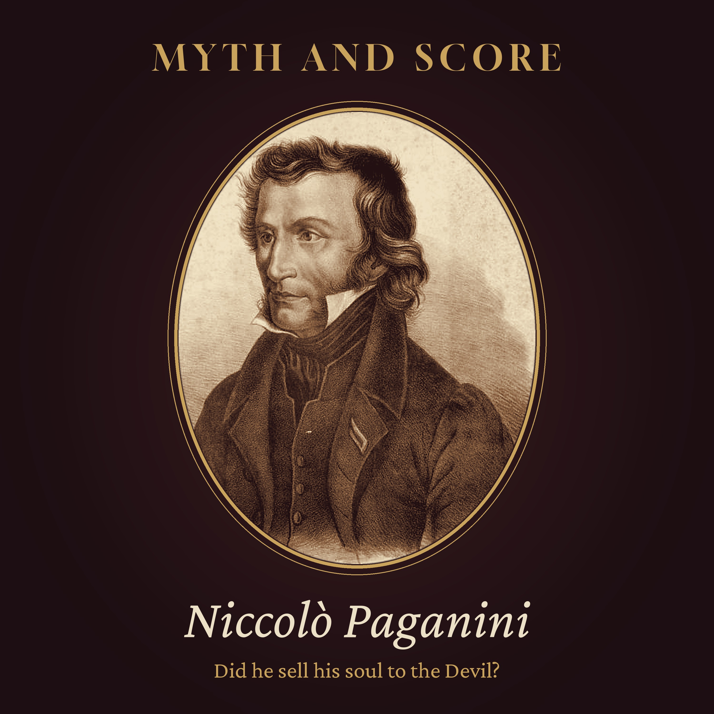

Myth and Score · Episode 3 · 40 min
Did Paganini Sell His Soul to the Devil?
Did the greatest violinist of his age buy his gift from the Devil? In Vienna in 1828, some listeners swore they saw a horned figure at Niccolò Paganini's elbow. In Paris, a print showed him in a prison cell, where he had supposedly learned to play on one string after a murder. And when he died in Nice in 1840 without the last rites, the Church refused him a grave, and his body wandered for decades before it came to rest in Parma. Tonight we hold the legend up to the light: his childhood in Genoa, the court of Napoleon's sister at Lucca, the real arrest behind the prison tale, the planned "broken string" pieces, Heinrich Heine's feverish visions, his illnesses and the medical theories about his hands, the twenty-four Caprices, his gambling, and his violin, Il Cannone, still kept in Genoa. A calm, long listen. Read by a synthetic voice; script written and fact-checked by the show's team. Chapters: The story everyone knows · A lane in Genoa · The court at Lucca · The witches at La Scala · The prison that never was · Vienna, 1828 · The man in black · The strings that snapped · The poet in Hamburg · A body that could bend · Twenty-four caprices · Cards and dice · The cannon · A long illness · Nice, May 1840 · The long journey · The verdict · Listening again Episode picture: Niccolò Paganini, nineteenth-century lithograph, public domain (Wikimedia Commons). Read by a synthetic voice; script written and fact-checked by the show's team.
The script
In the spring of 1828, the people of Vienna named hats, gloves, pastries and even a style of hair after a violinist... and some of them were quite sure that the Devil stood beside him on the stage.
The violinist was Niccolò Paganini. The whisper followed him for the rest of his life. And when he died, it followed his body for more than half a century.
Myth and Score. Episode three... Did Paganini sell his soul to the Devil?
This episode is read by a synthetic voice. If these stories keep you company, follow the show... it helps others find it.
On this show, we take the most famous stories about great composers and hold them up to the light. Some turn out to be true. Some are half true. And some, like tonight's, were helped along by the very man they were told about.
Tonight's question sounds like a fairy tale, and in a way it is one. Did the greatest violinist of his age buy his gift from the Devil?
To answer it, we will walk through a narrow lane in Genoa, a small Italian court ruled by Napoleon's sister, a prison cell that may never have existed, a concert hall in Hamburg seen through the eyes of a poet, a gambling house in Paris, and a violin that its owner called a cannon. And at the end, we will follow a coffin that took fifty-six years to find its last resting place.
Chapter one. The story everyone knows.
Let us start with the story as most people have heard it.
In this version, Paganini is a thin, pale figure dressed in black, with long dark hair and burning eyes. He walks on to the stage like a shadow. He plays faster than any human being should be able to play. Strings snap under his bow, one after another, and still he goes on, on a single string, until the audience is half mad with excitement.
How could a man play like that? There could be only one answer. As a young man, he had made a bargain. His soul, in exchange for his gift. Some said that the Devil himself could be seen standing behind him, guiding the bow. Others said that he had learned his art in a dungeon, where he had been locked away for murder. And when he died, the Church refused to bury him... and so, for many years, his body had no grave at all.
It is a wonderful story. It has everything... genius, sin, a prison, a curse, and a restless corpse at the end.
The strange thing is that parts of it are true. A few of them are documented very well. The question is which parts... and who was telling them.
So let us go back to the beginning, and see what the documents actually say.
Chapter two. A lane in Genoa.
Niccolò Paganini was born on the twenty-seventh of October 1782, in Genoa, the great port city of the Ligurian coast. He was the third of six children of Antonio Paganini, a dock worker and small trader who played the mandolin, and Teresa Bocciardo.
It was his father who first put a mandolin, and then a violin, into the boy's hands. By Paganini's own later account, Antonio was a strict and frightening teacher. If the boy did not practise enough, he was made to go without food. Whether every detail of that memory is exact, we cannot say. But the picture of a small child practising for hours in a crowded room in the old town, with his father listening, appears again and again in what Paganini told people later.
There is another story from those years, and it is worth remembering, because it will matter later. Paganini told a biographer that his mother once had a dream. In it, an angel appeared and offered to grant her one wish. She asked that her son should become the greatest violinist in the world. And the angel promised that he would.
Notice what kind of story this is. It is not a pact with the Devil. It is a gift from heaven. Paganini told it himself, as an older man. We will come back to it.
There is one more story from his childhood, and it is just as hard to check. It is said that as a small boy, he fell so gravely ill, with measles or something like it, that his family believed he had died, and began to prepare him for burial... until someone noticed a small movement in the shroud. We have no document for it. But it shows how early the legends began to gather around him... a child who came back from the edge of the grave.
The boy went on to proper teachers in Genoa... first a violinist named Giovanni Servetto, and then Giacomo Costa, who led the orchestra of the cathedral. Around 1795, when he was about thirteen, he gave a public concert to raise money for further study, and went with his father to Parma. There he met the celebrated violinist Alessandro Rolla, and studied composition with Gasparo Ghiretti, and, by some accounts, with Ferdinando Paer. Paganini later claimed that Rolla, on hearing him, said there was nothing left to teach him. Other writers doubted the story. It was not the last time that Paganini would tell his own life a little more grandly than it happened.
Chapter three. The court at Lucca.
In 1805, the small republic of Lucca, in Tuscany, was handed by Napoleon to his sister, Elisa Baciocchi. She became its princess, and she wanted a court worthy of the name. Paganini, now in his early twenties, joined her musicians. He played in the orchestra, gave lessons to her husband, and wrote music for her evenings.
From those years comes the first famous trick on a reduced number of strings. By Paganini's own account, he wrote a little love scene for two strings only... the highest string, to be the lady, and the lowest, to be the gentleman. The princess was delighted, and asked whether he could manage with just one. So he wrote a sonata for the lowest string alone, the G string, and named it after her brother... Napoleone.
Here we can see something important. Playing on one string was not a disaster forced on him by fate, or by a broken instrument. It was a party piece. It was planned, practised and written down. He would perform music on the G string alone for the rest of his career, and audiences would always find it astonishing.
By around 1809, Paganini had left Lucca. For the next few years he travelled the cities of northern Italy as a free musician, and his reputation grew with every concert.
Chapter four. The witches at La Scala.
The turning point came in Milan. On the twenty-ninth of October 1813, at the famous theatre of La Scala, Paganini played a new set of variations of his own. The theme came from a ballet, and the piece was called Le Streghe... The Witches.
Hold on to that title for a moment. A young man in black, playing music about witches, with a technique no one had heard before. You can almost feel the rumours waiting to be born.
From that evening, Paganini was famous across Italy. He gave dozens of concerts in Milan alone, and then toured from city to city, though it would still be many years before he crossed the Alps.
And in these same years, something happened that gave his legend its darkest chapter. In 1814 and 1815, Paganini had an affair with a young woman named Angelina Cavanna, the daughter of a tailor in Genoa. She became pregnant. Her father accused Paganini of abducting her, and he was arrested. The records show that he spent a short time in prison... days, not years... and that he was ordered to pay damages to the family. Sources differ on the exact dates and on the city.
It was an ugly episode, and it reflects badly on him. But it was not a murder. And it was not a long imprisonment. Yet out of that small seed, a much larger story would grow.
Chapter five. The prison that never was.
By the time Paganini became famous outside Italy, a story was going round about him. It said that as a young man, he had killed someone... a rival, or a mistress, or a wife; the versions did not agree. And for this crime, he had spent many years in a dungeon, some said eight. Alone in his cell, with nothing but a violin, he had practised day and night. When the strings broke, there was no one to replace them, and so he had learned to play on whatever string was left. And that, people said, was the secret of his impossible technique.
Look closely, and you can see how the story was built. The short arrest of 1815 became a long sentence. A lawsuit about a young woman became a murder. And the G string pieces from Lucca, written for a princess, became the desperate music of a prisoner.
When Paganini arrived in Paris in 1831, he found that the story had arrived before him. A print was on sale showing him in a prison cell. He was hurt by it, and he did something unusual. He wrote a long letter to the leading Paris music critic, François-Joseph Fétis, and allowed him to publish it. In it, as later printed, he described the rumours that had followed him across Europe, and denied them. He had never been in prison for murder, he said. He wished only to be judged by his music.
It did not help much. A good story travels further than a correction. And a correction, printed in a music journal, reaches far fewer people than a picture in a shop window. But the letter is worth remembering, because it shows that Paganini did not want every rumour about himself. Some of them he wanted very badly to be rid of.
Chapter six. Vienna, 1828.
Paganini was in his mid forties before he left Italy at last. He gave his first concert in Vienna on the twenty-ninth of March 1828, and the city lost its head.
For a few months, everything in Vienna was à la Paganini. Hats, gloves, snuff boxes and walking sticks carried his name or his face. Bakers made pastries in the shape of a violin. Ticket prices were high, and still the halls were full. The composer Franz Schubert, who had very little money that year, went to hear him, and afterwards wrote to a friend that in the slow movement, he had heard an angel sing. That is a paraphrase, but the angel is Schubert's own.
Not everyone heard an angel. It was in Vienna, the sources agree, that the talk of the Devil first spread widely. One story said that during his playing of The Witches, a listener had clearly seen a figure standing beside the violinist... a figure with horns, perhaps a tail... guiding his fingers and his bow.
Paganini knew about the story. He mentioned it himself, with some irony. And here we come to a small puzzle. If the stories hurt him, why did he so often tell them again? Part of the answer, surely, is that a man who sells tickets knows the value of a legend. Another part is simpler. Everyone was talking about Paganini. And he did not want them to stop.
That same spring of 1828, in Vienna, his long relationship with the singer Antonia Bianchi came to an end. They had never married. Their son, Achille, had been born in Palermo in 1825, and Paganini kept the boy with him. From then on, father and son travelled together, and Achille became the person Paganini loved most in the world.
Chapter seven. The man in black.
What did Paganini actually look like? Here we have many witnesses, and they agree more than you might expect.
He was tall and very thin. He was pale, with long black hair that fell to his shoulders, a large nose, and deep-set eyes. He usually dressed in black. When he walked on to the stage, he seemed, to many people, almost to stagger, and he bowed in a strange, angular way. Then he lifted the violin, and he was transformed.
Some of this was illness, and we will come to that. But some of it was theatre. Paganini understood, perhaps better than any musician before him, that a concert was a performance to be watched as well as heard. The pause before he began. The black clothes against the bright hall. The way he would play a passage of breathtaking speed, and then stand very still, as if exhausted.
In Paris, he made his debut at the Opéra on the ninth of March 1831. In London, he played for the first time at the King's Theatre on the third of June that year, after a delay, because The Times had complained loudly about his ticket prices. Crowds followed him in the street. People tried to touch him, to see whether he was made of flesh.
He became, by the standards of his time, enormously rich. And that, too, fed the whispers. Where does a poor boy from the docks of Genoa find a gift like this, and a fortune like this? Some people preferred not to believe that the answer was work.
Chapter eight. The strings that snapped.
Now to the most famous trick of all... the breaking strings.
Many concert stories describe a string snapping in the middle of a piece, and Paganini simply carrying on, finishing the music on three strings, or two, or one. Some of these stories may be true. Gut strings did break, and a player who could perform a whole sonata on the G string could certainly rescue a concert with one string gone.
But it is worth asking how often this happened by accident. Several writers since have suggested that Paganini sometimes helped it along... that a string might be worn thin, so that it would break at the right moment. We have no confession, and it would be wrong to say it as a fact. What we can say is that he had a great deal of music ready for exactly that situation.
The most famous example is a set of variations on a prayer from Rossini's opera Mosè in Egitto, written around 1818 or 1819, for the G string alone. Paganini even had the string tuned higher than usual, so that it could sing more brightly. That is not the music of a man surprised by misfortune. It is the music of a man who has planned the miracle in advance.
He was secretive, too. He rarely let his concertos be printed, because he did not want other violinists to learn his methods. He took the orchestral parts away with him after each concert. He was said to practise very little in public, so that no one could see how it was done. And a phrase grew up in Italy that is still used today... Paganini non ripete. Paganini does not repeat... no encores, nothing twice.
A musician who hides his methods and does not repeat himself leaves a gap. And people will fill a gap with whatever story they like best.
Chapter nine. The poet in Hamburg.
In 1830, Paganini played in Hamburg. In the audience, or at least in the city, was the German poet Heinrich Heine. A few years later, in the mid 1830s, Heine published a work of fiction called Florentinische Nächte... Florentine Nights. In it, his narrator describes going to a Paganini concert in Hamburg.
It is one of the most vivid portraits of Paganini ever written, and it is important to remember that it is fiction. Heine's narrator notices the man walking with Paganini, a real person, his companion and agent Georg Harrys. And with a wink, the story suggests that this companion is really the Devil, wearing Harrys's shape.
Then the concert begins, and as the narrator listens, he sees visions. In one of them, Paganini is in chains, with heavy fetters on his feet, and behind him is a figure with a face like a goat's, whose hairy hands seem to reach for the strings. In others, the music becomes a storm at sea, or a crowd of spirits. This is our paraphrase of a long and very beautiful passage.
Heine was not reporting. He was a great ironist, and his story laughs a little at the very superstitions it describes. But he was also one of the finest writers in Europe, and once you have read his visions, it is hard not to see them. The prison, the chains, the goat-like figure at the shoulder... the rumours of Vienna had found their poet.
Chapter ten. A body that could bend.
If the Devil did not give Paganini his hands, what did?
Witnesses describe hands of extraordinary flexibility. A doctor named Francesco Bennati, who examined him in Paris, wrote that his joints were unusually loose... that he could bend his thumb back to touch the back of his hand, and that his left shoulder sat higher than the right. Bennati thought that this suppleness, more than anything mysterious, explained some of what Paganini could do.
In the twentieth century, doctors looked again at these descriptions. Some suggested that Paganini had Marfan syndrome, an inherited condition of the connective tissue that can bring long limbs, long fingers and very loose joints. Others pointed out that his limbs were not especially long, and suggested instead a form of Ehlers-Danlos syndrome, another condition in which the joints are unusually mobile.
These are theories. No one can examine Paganini now, and the descriptions we have were written by people with their own reasons to marvel. It is quite possible that he had neither condition, and was simply a very supple man who practised, as a child, for many hours a day.
But notice the shape of the explanation. A body that could stretch further than other bodies. Hours of work in a crowded room. A father who would not let him stop. Put together, they make a far less romantic story than a midnight bargain. And a far more likely one.
Chapter eleven. Twenty-four caprices.
There is one place where we do not need witnesses at all, because Paganini left the evidence himself.
In 1820, the Milan publisher Ricordi printed a set of twenty-four pieces for violin alone, as Paganini's opus one. They were called Capricci... caprices. He had written them over many years, probably between about 1802 and 1817. And he did not dedicate them to a prince or a patron. The title page dedicated them simply to the artists.
Each caprice is a small world. One leaps across the strings in wide jumps. One sings in double notes, two lines at once. One imitates a horn and a flute in turn. And the last, the twenty-fourth, is a short theme followed by eleven variations and a finale, each one a different problem for the player to solve.
Here is the remarkable thing. The caprices are hard... fiercely hard... but they are not impossible. Every one of them has been learned, recorded and played in public by many violinists since. That is the best answer to the legend. What the Devil gives, he does not usually write down for the rest of us.
And other composers listened. The young Franz Liszt heard Paganini in Paris in 1832 and decided to do for the piano what Paganini had done for the violin. Robert Schumann arranged caprices for the piano. Johannes Brahms wrote two books of variations on the theme of the twenty-fourth. And a century later, Sergei Rachmaninoff wrote his Rhapsody on a Theme of Paganini, on the same tune.
Chapter twelve. Cards and dice.
Paganini had one vice that was not a rumour at all. He gambled.
He said so himself. He told how, as a young man, he would often lose in one evening at the card table what several concerts had earned. And he told one story that has become part of the history of the violin. In Livorno, the port of Tuscany, he said, he was due to play a concert but had gambled away, or pawned, his own violin. A French merchant who loved music lent him a fine instrument for the evening. After hearing him play, the merchant refused to take it back. That, at least, is Paganini's own version, as his early biographers repeated it.
Late in his life, the gambling and the business sense came together, disastrously. In 1836 and 1837, friends persuaded him to lend his name and his money to a grand new establishment in Paris... a concert hall and club that was to be called the Casino Paganini. It opened at the end of 1837. But the gaming licence it was counting on never came, the concerts did not pay, and within weeks the business collapsed.
The investors sued, and Paganini, by now very ill, was caught in a tangle of lawsuits. He lost a great deal of money, and he was angry and humiliated. At the end of 1838, he left Paris for the south of France, and he never went back.
It is a sad end to a great career. But there is nothing supernatural in it. A gambler, a bad partnership and a lawsuit are among the most human things in the world.
Chapter thirteen. The cannon.
Now to the violin itself.
Paganini owned several fine instruments, but the one he loved above all was made in Cremona, in 1743, by Bartolomeo Giuseppe Guarneri, known as Guarneri del Gesù. Its sound was so powerful, so dark and so large, that Paganini called it il mio cannone... my cannon. And the name has stayed with it. Il Cannone.
How it came to him is not certain. It is often said that it was a gift from an admirer, and some tell it as the violin of the Livorno story. Others doubt that link. What we know for certain is what he did with it at the end.
In his will, Paganini left Il Cannone to his native city of Genoa, so that it should be kept there for ever. Genoa has kept that promise. Since 1851, the violin has been held in Palazzo Doria-Tursi, the city hall, in a glass case, in a room named after him.
But it is not only a relic. Every so often, the cannon is taken out of its case and played... by the winners of Genoa's international violin competition, which carries Paganini's name, and by a few chosen soloists. The instrument that whispered of the Devil now speaks, now and then, in the hands of young violinists from all over the world.
Chapter fourteen. A long illness.
Now let us turn to the body that the Devil was supposed to have claimed.
The truth is that Paganini was ill for most of his adult life, and the medicine of his time made it worse. Around 1822, his doctors decided that he had syphilis, and treated him, as was usual then, with mercury and with opium. Mercury is a poison. Over the years, it can damage the gums, loosen the teeth, and harm the nerves and the kidneys.
In 1828, in Prague, he had an operation on his jaw. Over time, he lost his teeth, which changed the shape of his face and gave him the sunken look that so many portraits show. In 1834, doctors in Paris treated him for tuberculosis... a diagnosis that historians now doubt. Some modern writers believe that much of his decline came from chronic mercury poisoning, given to him as a cure. That, too, is a theory, though a serious one.
What is not in doubt is the end. A disease of the throat slowly took away his voice. By his last years, he could hardly speak. Achille, now a young man, stood beside him and read the words from his lips.
So when people in Vienna and Paris saw a gaunt, pale figure in black, with a sunken mouth and a stooping walk, they were not seeing a demon. They were seeing a sick man, treated with poison by his doctors, who still walked out on to the stage every night.
Chapter fifteen. Nice, May 1840.
After leaving Paris, Paganini went south, to the Mediterranean, and in the autumn of 1839 he settled in Nice, which then belonged to the Kingdom of Sardinia, and so came under the bishop of Nice.
He died there, on the twenty-seventh of May 1840, at the age of fifty-seven.
And here the documents become painful. In his last days, a priest, the Abbé Caffarelli, was sent to him to hear his confession and give him the last rites. It seems that Paganini sent him away. Some accounts say that Paganini did not believe he was dying yet, and asked the priest to come back another time. Others think that he simply could not speak, and that his silence was taken as refusal. Whatever the reason, he died without the last sacraments.
The bishop of Nice, Domenico Galvano, then refused to allow a Church funeral, or a burial in consecrated ground. The rumours surely did not help... the stories of the Devil, the gambling, the life outside marriage. But the formal reason was the missing sacraments, and an inquiry was opened into whether Paganini had died a Christian.
For Achille, not yet fifteen, it was the beginning of a long struggle. His father was dead, and he had nowhere to bury him.
Chapter sixteen. The long journey.
What happened next is one of the strangest stories in music, and the sources do not agree on every step. So we will go carefully.
The body was embalmed. For a time, it seems to have stayed in the house in Nice. Then it was moved to a sealed room in an old quarantine building, a lazaretto, at Villefranche, along the coast. Later stories tell of it resting on a rocky point by the sea, and even in a disused oil store. These later stories may be true, or they may be the legend adding to itself, as it always did.
In the 1840s, the body was taken, by some accounts, by sea towards Genoa, and later to Achille's estate at Gaione, near Parma. Achille never stopped petitioning, to the bishops and to Rome. Slowly, the Church softened.
In 1876, thirty-six years after his death, Paganini was at last buried in consecrated ground, in the Villetta cemetery in Parma.
Even then, he was not left in peace. In 1893, the Czech violinist František Ondříček persuaded Paganini's grandson to let him see the body, and the coffin was opened. In 1896, it was opened once more, and Paganini was moved to a new tomb in the same cemetery. There he has rested ever since... fifty-six years after he died, if we count to that final tomb.
It is easy to see why people believed in a curse. But look at each step, and there is no Devil in any of them. There are bishops, lawyers, quarantine rules, a grieving son, and a great deal of paperwork.
Chapter seventeen. The verdict.
So what is left, when we hold the myth up to the light?
We have a boy from Genoa who was made to practise for hours, under a strict father, and who may have had unusually flexible hands. We have a showman of genius who understood the power of black clothes, a long pause, and a single string. We have pieces written for one string, planned and practised years before the legend of the prisoner. We have a short arrest, not a long sentence. We have a sick man, treated with mercury, whose illness gave him the look of a ghost. And we have a funeral refused over the last rites, and a son who spent thirty-six years seeking a Christian grave for his father.
We also have the storytellers... the gossip of Vienna, a print in Paris, and a great poet in Hamburg who saw chains and a goat-like figure in the music, and wrote them down with a smile.
And we have Paganini himself. He wrote to deny the prison story. But he told and retold the strange tales of his life, made the most of the mystery, and rarely let anyone see how his effects were made.
So, did Paganini sell his soul to the Devil?
No. There is no evidence of anything of the kind... and the story he told about his own gift was of an angel, not a devil. The legend was born in gossip and fiction. But it was also, in part, cultivated by Paganini himself, as showmanship. He did not invent the Devil at his elbow. He simply never asked him to leave the stage.
Chapter eighteen. Listening again.
There is one more story worth telling, because it shows a side of Paganini that the legend leaves out.
In 1834, Paganini asked the young French composer Hector Berlioz to write him a piece for the viola. Berlioz wrote Harold en Italie... Harold in Italy. Paganini found that the solo part had too many rests, and he never played it.
Four years later, in December 1838, during his last hard winter in Paris, Paganini heard the piece at last. Afterwards, he went up to Berlioz, knelt before him, and kissed his hand. A few days later, he sent him twenty thousand francs, with a note of admiration. Some have suggested that the money came, in part, from someone else, and that Paganini only lent his name. If so, he lent it generously. For Berlioz, it meant time to write.
In the same years, Paganini made sure that his son would be provided for. Achille was his heir, and inherited a large fortune. It was Achille, too, who would carry the struggle for his father's grave for more than thirty years.
That is the man behind the legend... ill, proud, theatrical, sometimes foolish with money, and capable of real generosity to another artist.
Perhaps the fairest thing we can do for him is to listen to the caprices... not for the Devil in them, but for the hours of work.
This has been Myth and Score. The sources for tonight's episode are in the notes.
In a glass case in Genoa, a violin called the cannon is waiting for its next player... and the story goes on.
Also from the late hours: Embers of History · Slow Orbit · The Quiet Armoury